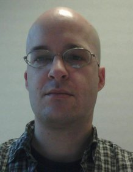

Welcome
This is the homepage of Uli Fahrenberg, mathematician /
computer scientist. It is deliberately kept short to be
(hopefully) more easily maintainable.
I am professor at EPITA
Rennes and at LRE, and
head of the Automata and
applications research group at LRE. I am also associated
with IRISA Rennes, where I
am a member of the SUMO group,
and with the Cosynus group
of LIX, École polytechnique.
I have a PhD in mathematics from Aalborg University and
have worked at Aalborg University, IRISA Rennes,
and École polytechnique.
Research
My research is in the areas of real-time systems, quantitative verification, directed algebraic topology,
concurrency theory, and in categorical foundations for theoretical computer science.
I keep an up-to-date list of publications.
I am an organizer of the Paris Automata and Concurrency Theory Seminar.
See also The (i)Po(m)set Project.
I have defended my habilitation à diriger des recherches
at the University Paris-Saclay on 10 May 2022.
My thesis is entitled A Generic Approach to Quantitative Verification
and available on arxiv.
Une traduction française du premier chapitre
est disponible sur hal,
sous le titre Une approche générique à la vérification quantitative.
Merci à Aline Fahrenberg pour la traduction.
Recent preprints:
Upcoming events
Teaching
Courses Fall 2024:
- Théorie des langages rationnels THLR, Spé
- Théorie des langages THL, Ing1
- Structures algébriques STA, Ing1
Courses Spring 2025:
- Chiffrement et codes correcteurs CHIFR, Ing1
- Programmation vectorielle pour calcul matriciel PVCM, Ing1
- Éléments de recherche opérationnelle 1 ERO1, Ing1
- Introduction to Kleene algebra (électif), Ing1
PhD students:
- Enzo Erlich, Université Paris Cité, France (2024-)
- Safa Zouari, NTNU Gjøvik, Norway (2022-)
- Claus Thrane, Aalborg University, Denmark (2008-2011)
Current internships:
- (with Hugo Bazille) Brieuc Crosson, EPITA Rennes Ing1: Automata with multiset semantics
- (with Hugo Bazille) Gurvan Estable, Kévin Lubert, EPITA Rennes Ing1: Generating interval orders
- (with Hugo Bazille) Romane D'Ancona, Erwan Le Grand, EPITA Rennes Ing1: Automata with alphabet constraints
Estonian Winter School on Computer Science:
I recently gave lectures at the 27th EWSCS
on the theme Discrete and continuous models for concurrent systems: from Petri nets to directed spaces;
Philipp Schlehuber-Caissier helped with the exercises.
- Part 1: The Geometry of Concurrency
- Part 2: Concurrent Semantics of Petri Nets
- Part 3: Languages of Higher-Dimensional Automata
- Part 4: Advanced Topics
PhD proposals:
Scientific service
- Steering committee member:
RAMiCS (co-chair),
GETCO
- Program committee chair:
RAMiCS 2024,
RAMiCS 2021,
RAMiCS 2020,
DHS 2017,
QFM 2012,
FORMATS 2011
- Program committee member:
TiCSA 2023,
RAMiCS 2023,
GETCO 2022,
QAVS 2022,
QAVS 2021,
ADHS 2021,
QAVS 2020,
FORMATS 2020,
ICTAC 2020,
ICTAC 2019,
RAMiCS 2018,
ICTAC 2018,
ADHS 2018,
FORMATS 2017,
ACSD 2017,
FESCA 2017,
SOFSEM 2017,
FESCA 2016,
TACAS 2015,
MFCS 2014
Thesis evaluations:
- Athanasios Evangelou-Oost (PhD, The University of Queensland, 2025; reviewer)
- Sabrine Saouli (PhD, Paris Sorbonne Université, 2024)
- Caroline Lemke (MSc, TU Berlin, 2024; reviewer)
- Anissa Kheireddine (PhD, Paris Sorbonne Université, 2023)
Network
Here's a list (in alphabetical order) of nice people I work, or have
worked, with:
Alessandro Abate,
Xavier Allamigeon,
Amazigh Amrane,
Jo Atlee,
Sebastian S. Bauer,
Hugo Bazille,
Nikola Beneš,
Benjamin Bisping
Patricia Bouyer-Decitre,
Emily Clement,
Benoît Delahaye,
Manfred Droste,
Jérémy Dubut,
Alexandre Duret-Lutz,
Sven Dziadek,
Zoltán Ésik †,
Lisbeth Fajstrup,
Marie Fortin,
Martin Fränzle,
Stéphane Gaubert,
Eric Goubault,
Emmanuel Haucourt,
Loïc Hélouët,
Christian Johansen,
Barbara König,
Jan Křetínský,
Kim G. Larsen,
Axel Legay,
John Leth,
Nicolas Markey,
Samuel Mimram,
Dejan Ničković,
Karin Quaas,
Sergio Rajsbaum,
Martin Raußen,
Jiří Rosický,
Luigi Santocanale,
Philipp Schlehuber-Caissier,
Jiří Srba,
Georg Struth,
Claus Thrane,
Louis-Marie Traonouez,
Andrzej Wąsowski,
Rafał Wisniewski,
Krzysztof Ziemiański
Things which are named after me
Things which are not named after me:
Previous teaching
My teaching has been within computer science and mathematics,
in English, French, and Danish. Here's a non-exhaustive list
in roughly chronological order:
- Category theory for programmers CT4P, Ing1 (2022, 2023)
- Théorie des langages rationnels THLR, Spé (2021, 2022, 2023)
- Théorie des langages THL, Ing1 (2021, 2022, 2023)
- Structures algébriques STA, Ing1 (2021, 2022, 2023)
- Chiffrement et codes correcteurs CHIFR, Ing1 (2021, 2022, 2023)
- Automates, algèbre, applications AAA, Ing1 (2021, 2022)
- Typologie des langages TYLA, Ing1 (2021, 2022, 2023)
- Éléments de recherche opérationnelle 1 ERO1, Ing1 (2021, 2022, 2023)
- TP CSE101 (Bachelor X): Computer programming (Python) (2017, 2019, 2020)
- TP CSE102 (Bachelor X): Advanced computer programming (Python) (2018)
- TP Master 1 Rennes / ISTIC: Modélisation et vérification (2012-2014)
- PhD student co-supervision: Claus Thrane (2008-2011; with Kim G. Larsen)
- PhD course: Category theory with applications in functional programming (2009; with René R. Hansen)
- Master's student supervision: Max-plus algebra for real-time model checking (2010)
- Graduate course: Formal systems (2010; with Kim G. Larsen)
- Graduate course: Semantics and verification (2010; with Kim G. Larsen)
- Graduate and undergraduate student project supervision
- Undergraduate course: Syntax and semantics (2007, 2008, 2009)
- Undergraduate course: C Programming (2006, 2007)
- Undergraduate course: Linear algebra for electrical engineers (2006)
- Undergraduate course: Calculus for architects (2005)
- Offices
-
EPITA Rennes,
3679 Boulevard des Alliés, 35510 Cesson-Sévigné, France
LRE,
18 rue Pasteur, 94270 Le Kremlin-Bicêtre, France
IRISA,
263 avenue Général Leclerc, 35000 Rennes, France
- Email
- fahrenberg@gmail.com
- Public key fingerprint
- 870B 2D3F 55F3 2B97 DB33 04CF 39FF 874C 19F4 A447
- Arxiv
- https://arxiv.org/a/fahrenberg_u_1
- Youtube
- https://www.youtube.com/channel/UCjNBZ4yb7q-8LTKH-8JzEVw
- ORCID
- 0000-0001-9094-7625
- DBLP
- https://dblp.org/pid/89/5538.html
- Postal mail
-
Uli Fahrenberg
EPITA Rennes
3679 Boulevard des Alliés
35510 Cesson-Sévigné
{kind=link}